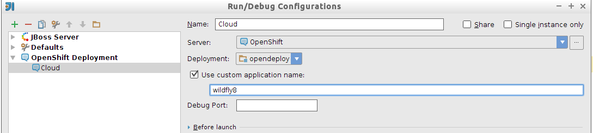

6. Plataforma como Servicio
6.1. Conceptos propios de OpenShift
A nivel de infraestructura, OpenShift se apoya en dos unidades funcionales básicas: el broker y los Node Servers
- Broker
-
Este elemento es el punto de entrada para todas las tareas de administración. Es el encargado de administrar los login, la resolución DNS, el estado de las aplicaciones y la orquestación general . Los desarrolladores no trabajan directamente contra este elemento, si no que se invoca indirectamente a través de las herramientas de administración, que veremos a continuación. El broker utiliza un frameworks de orquestación de procesos en paralelo, llamado MCollective para enviar instrucciones a los node servers.
- Node Servers
-
Son las máquinas host que ejecutan tanto los Cartridges como los Gear por tanto serán los encargados de alojar y ejecutar nuestras aplicaciones. Los Node Server también utilizan un cliente MCollective para recibir las instrucciones del broker.
| La comunicación entre los clientes MCollective del broker y los node server se realiza asíncronamente, mediante un sistema de cola de mensajes. |
- Application
-
Será la aplicación propiamente dicha que despleguemos en la nube. En principio OpenShift está orientado hacia aplicaciones Web (en distintos lenguajes) por lo que los puertos a través de los cuales se podrá acceder a ellas son los típicos de HTTP (80), HTTPS(443) y SSH (22). Adicionalmente se ofrece soporte beta a conectividad basada en WebSockets, a través de los puertos 8000 y 8443.
Las direcciones de las aplicaciones seguirán el siguiente patrón:
https://[APPNAME]-[DOMAIN].rhcloud.com- Gear
-
Un gear es una partición de un Node server (CPU, memoria y almacenamiento) , que proporciona los recursos necesarios para ejecutar las aplicaciones. Se dividen en tres categorías: small (512Mb RAM), medium (1Gb) y large (2Gb). Para pequeñas aplicaciones suele ser suficiente el gear más limitado, sin embargo hay configuraciones concretas que recomiendan al menos 1Gb de RAM, como en el caso de querer trabajar con JBoss EAP. Cada Gear tendra una estructura de directorios como la siguiente:

| Si nuestra aplicación supera el límite de memoria impuesto al gear, OpenShift matará automáticamente el proceso y lo relanzará. |
Técnicamante, para aislar los procesos del Gear se utiliza Security-Enhanced Linux (SELinux) y para establecer las cuotas de memoria, cpu y disco se utiliza Control Groups (Cgroups). No se indica explícitamente la CPU y de E/S permitida para cada gear, pero Red Hat muestra estas cifras de ejemplo:

| Recientemente se ha anunciado una nueva configuración, denominada Small.highcpu que mantiene el tamaño máximo de memoria pero duplica la capacidad de proceso. También es posible contratar máquinas dedicadas privadas. |
- Cartridge
-
Son los recursos que necesitan las aplicaciones para poder ejecutarse dentro de un gear. La idea es paquetizar los distintos elementos (servidor de aplicaciones, base de datos, proxy, etc.) en cajas negras y permitir que el desarrollador pueda "insertar" aquellos cartuchos que considere necesarios dentro del gear. En definitiva una forma de abstraer la gestión de la infraestructura y es lo que lo diferencia de un modelo IaaS, si bien como veremos luego tendremos cierta libertad de hacer cambios en estos cartuchos. Hay dos categorías de cartridges:
-
Standalone: Son los runtime de los lenguajes o bien servidores de aplicaciones y los principales responsables de poder desplegar una aplicación. Ejemplo: JBoss, Tomcat, Python o Node.js.
-
Embedded: Proporcionan funcionalidades extendidas como almacenamiento en base de datos o ejecución de tareas planificadas (Cron), pero por si mismos no son suficientes para ejecutar una aplicación.
-
- Application Scaling
-
Es una funcionalidad de escalado automática que permite adecuar la capacidad de proceso a la carga de trabajo actual. Si está activada, OpenShift monitoriza el tráfico de entrada y la carga de trabajo de los gear actuales y puede añadir nuevos gears para atender un pico de trabajo y liberarlos cuando ya no sean necesarios. Mas adelante hablaremos de esta funcionalidad con más detalle.
- Proxy Ports
-
Permiten a los Gear exponer servicios que estén en ejecución. Cada Gear permite exponer hasta 5 servicios distintos.
- Herramientas de administración
-
OpenShift proporciona tres herramientas distintas:
-
RHC una herramienta de administración en línea de comandos desarrollada en Ruby y portable a todas las plataformas. Veremos que al contrario de Jboss-cli, rhc si puede considerarse ser la herramienta principal de trabajo de administración.
-
API REST Gran parte de la funcionalidad de RHC se expone también como un API Rest integrable en otras aplicaciones.
-
Consola de administración Web que nos ofrece un entorno más amigable pero más limitada que RHC.
-
JBoss Tools Se trata de una serie de plugins para Eclipse que integran en el IDE tanto el trabajo con JBoss/WildFly como el despliegue en cloud. Hay una versión específica de Eclipse llamada JBoss Developer Studio que ya lleva integrados estos plugins.
-
- SSH
-
OpenShift permite el acceso remoto a los gear desde nuestras máquinas locales mediante una conexión segura SSH. Como parte del proceso de configuración de la herramienta RHC se generan dos elementos de seguridad:
-
Un par de claves, pública y privada, asociadas a nuestra máquina. Sería algo parecido a la autenticación basada en certificados que estudiamos en la sesión 4 pero en este caso lo que se hace es subir a OpenShift la clave pública, y en el handshake de la conexión, el equipo envía un mensaje encriptado con la clave privada y OpenShift lo desencripta con la clave pública. Estos ficheros se almacenan en la capreta ./ssh del directorio home en los ficheros id_rsa e id_rsa.pub.
-
Un token de autorización que será el que nos identifique en cada conexión evitando el tener que estar introduciendo usuario y clave para autenticarnos. Los token se almacenan en la carpeta ./openshift del directorio HOME.
-
Dentro de una sesión SSH podremos acceder a los log de un gear, hacer cambios en la configuración e interactuar con los servicios desplegados pero no podremos realizar acciones que requieran ser superusuario. Mediante SSH también podremos activar una funcionalidad denominadad port-forwarding que permite mapear puertos de nuestra máquina local con puertos del gear permitiendo realizar tareas de administración desde nuestra máquina local de forma transparente. Lo veremos con más detalle en la siguiente sesión.
- Git
-
Git es la herramienta de control de versiones que utiliza OpenShift. Toda aplicación desplegada en OpenShift tiene un repositorio Git asociado que se crea automáticamente al dar de alta la aplicación. Este repositorio contendrá tanto los fuentes de la aplicación como los elementos de configuración y plugins asociados. OpenShift tiene la particularidad de que cuando hacemos push a este respositorio, no sólo subimos los ficheros sino que aplicamos cambios de configuración, recompilarmos la aplicación y finalmente la redesplegamos, todo ello de forma automática.
6.2. Cómo funciona OpenShift
Esta sería la representación de la arquitectura de OpenShift, en base a los elementos que ya conocemos:

Cuando un cliente realiza una petición HTTP a una aplicación, en primer lugar se ubica el node server en el que corre la aplicación, mediante la resolución DNS. Cada node server tiene un servidor apache con el módulo de proxy habilitado, y es quien encamina la petición al gear correspondiente, en función del nombre de la aplicación..
El siguiente gráfico describe el proceso de creación de una nueva aplicación:

6.2.1. Creación de aplicaciones
Vamos a crear una aplicación web mediante la herramienta rhc. Si ejecutamos rhc sin parámetros, se mostrará la ayuda y un listado con todas las opciones disponibles. A continuación enumeraremos las más comunes:
Listado de cartridges:
rhc cartridge listLa opción cartridge indica que vamos a ejecutar comandos relacionados con cartridges y list indica es la instrucción para que se muestren los cartridges disponibles. Una particularidad es que en la consola web muestra cartridges adicionales desarrollados por la comunidad y para los que Red Hat no ofrece soporte mientras que en la herramienta rhc no aparecen.
| Es conveniente actualizar periódicamente las herramientas rhc, con el comando gem update rhc |
Para crear un aplicación debemos tener claro en qué lenguaje vamos a trabajar y una idea de que cartridges vamos a necesitar. Con esta información ejecutaremos el siguiente comando:
Crear una aplicación
rhc app-create [nombre_app] [cartridge ...]Ejemplo:
rhc app create miapp python-2.7Con esta instrucción crearemos un nuevo gear, un repositorio Git, un servidor Apache con el módulo _ mod_wsgi_ y una aplicación plantilla en Python desplegada. También se ejecutará un comando git clone y nos descargaremos el código fuente en una carpeta con el mismo nombre que la aplicación. ¡Fácil y rápido!
Este comando tiene parámetros adicionales que pueden ser de utilidad:
- -n, --namespace NAME
-
Permite especificar el dominio de la aplicación.
- -g, --gear-size SIZE
-
Permite especificar el tamaño del gear. Si no se especifica se utiliza el tamaño por defecto (small)
- -s, --[no-]scaling
-
Habilita el Application Scaling
- --from-app NAME
-
Permite crear una aplicación tomando otra como plantilla.
- --from-code URL
-
Permite especificar un repositorio Git como origen del código fuente de la aplicación, en lugar de la plantilla.
- --region
-
Zona geográfica donde se creará el gear: (aws-eu-west-1, aws-us-east-1)
|
Ubicación geográfica
Desde septiembre de 2014 es posible especificar la zona en la que queremos que se cree nuestra aplicación. Hasta esa fecha únicamente se trabajaba sobre infraestructura de Amazon ubicada en Estados Unidos y a partir de ahora se puede trabajar sobre AWS en Irlanda. Hay que tener en cuenta que OpenShift sólo permite especificar la región si tenemos un plan de pago y vamos a utilizar un gear superior a small.
|
Si queremos crear una aplicación basada en un tipo de servidor que no esté en la lista de cartridges que muestra OpenShift tenemos dos opciones:
-
Utilizar el cartridge Do-It-Yourself y configurar a mano un gear como si se tratase de una plataforma IaaS.
-
Recurrir a los cartridges desarrollados por la comunidad de usuarios de OpenShift. De hecho, a la fecha de redacción de esta sesión WildFly 8 no tiene aún un cartridge soportado directamente por Red Hat.
Hay que tener claro a la hora de elegir un cartridge, el tipo de soporte que tendrá. La inmensa mayoría de cartridges mantenidos por OpenShift tienen soporte automático de parches de seguridad, con lo que podemos despreocuparnos de este aspecto. Si escogemos un cartridge desarrollado por terceros, debemos esta pendientes de aplicar estas actualizaciones. En un entorno de producción, sólo se deberían utilizar cartridges mantenidos por OpenShift, o en todo caso, generados por nosotros con el método genérico de Do-It-Yourself.
Para añadir un cartridge desarrollado por terceros se puede utilizar el siguiente comando
rhc app create <APP> <URL>
rhc wildfly8 create https://cartreflect-claytondev.rhcloud.com/reflect?github=OpenShift-cartridges/OpenShift-wildfly-cartridgeEl comando creará una aplicación llamada wildfly8 y descargará el cartridge de la dirección inidicada. Concretamente la URL tiene que apuntar a un fichero denominado manifest.yml que contiene la definición del cartridge.
| Ya es posible crear una aplicación basada en WildFly sin necesidad de utilizar un cartridge externo a OpenShift. El nuevo cartridge se llama jboss-wildfly-8 |
Desde la consola web, el proceso de creación es muy similar, basta con elegir un tipo de aplicación y rellenar los datos que se solicitan. Alternativamente es posible indicar la URL de un cartridge descargable para crear una aplicación diferente a las enumeradas:

Otra característica propia de la consola web es que podemos crear una aplicación a partir de un Quickstart. Los quickstart tienen la apariencia de un cartridge normal, si bien son combinaciones de cartridges ya predefinidas para desplegar un tipo de aplicación, además de una configuración de inicio para dicha aplicación. OpenShift tiene bastantes quickstarts con lo que merece la pena buscar uno que se adapte a nuestro proyecto.
Una vez creada la aplicación, normalmente se muestra por pantalla las claves de administración del nuevo servidor. No será habitual tener que acceder a la consolta web, dado que la filosofía de OpenShift es desplegar y configurar la aplicación desde el repositorio Git, puede ser muy útil tener estas claves para hacer alguna prueba o un cambio puntual en una instancia que no queramos reiniciar.
6.2.2. Añadir Cartridges de base de datos
Ya conocemos los cartridge que permiten crear aplicaciones pero ahora veremos qué cartridges podemos añadir que proporcionen funciones adicionales como almacenamiento de datos, ejecución de tareas programadas o monitorización.
La forma más sencilla de crear estos módulos es simplemente indicarlos en el momento de crear la aplicación.
rhc app create [nombre_app] [cartridge1] ... [cartridgen]Aunque es perfectamente posible añadirlos o quitarlos a posteriori, con el comando:
rhc cartridge-add [cartridge] --app [nombre_app]En el siguiente ejemplo, añadiremos una instancia de MySQL:
Si estamos trabajando desde la web, lo habitual es crear la aplicación y al seleccionarla, OpenShift nos ofrecerá directamente la posibilidad de añadir estos módulos.
| Hay determinados catridges que sólo se pueden incluir tras instalar uno específico, como por ejemplo, el módulo de administración de BD phpMyAdmin, que sólo se puede instalar si ya hemos incorporado una base de datos MySQL al proyecto. |
Al añadir un nuevo cartridge de base de datos, tanto desde la consola web como mediante rhc se nos informa del usuario y password de administración de dicha base de datos. En este caso, no es necesario apuntarnos esta información porque siempre la podremos recuperar desde l/a consola web. Lo que sí que es muy recomendable es reiniciar la aplicación para que el gear cargue las variables de entorno necesarias para poder acceder a la nueva base de datos:
Creación de DataSources
Si examinamos la configuración del servidor, dentro del repositorio GIT:
.openshift/config/standalone.xmlVeremos que por defecto trae configurados tres datasources, uno para una base de datos en memoria, otro para MySQL y otro para PostgreSQL. Si hemos añadido una BD MySQL y hemos reiniciado la aplicación como se indicaba en el paso anterior, WildFly automáticamente activará su DataSource:

6.2.3. Port forwarding
Repasando lo aprendido hasta ahora, hemos creado una aplicación Java, hemos añadido una base de datos y la hemos desplegado en un servidor. También sabemos que podemos modificar la configuración del servidor de aplicaciones y otros elementos haciendo cambios en los ficheros correspondientes del repositorio Git. Por ejemplo para definir un DataSource podríamos editar el fichero de configuración, creando uno nuevo a partir de los Datasources de ejemplo.
Pero ahora, al disponer de una base de datos necesitaremos trabajar directamente contra el servidor de base de datos, como por ejemplo para crear la BD de trabajo y sus datos. OpenShift permite hacer esto de varias formas, pero a continuación veremos un mecanismo que permite gestionar la configuración de los servicios desplegados en cloud, como si fueran servicios locales en la máquina del desarrollador.
El principal obstáculo que nos encontramos es que los puertos de administración no son visibles desde el exterior del servidor con lo que necesitamos algo que nos permita llegar a través de los puertos que sí son accesibles (https,ssh).
OpenShift proporciona para ello el comando port-forward. Se ejecuta especificando una aplicación:
rhc port-forward <app>
Se trata de una utilidad que busca puertos libres en nuestro equipo de desarrollo y enlaza con los puertos administrativos de los servicios que se ejecutan en un gear, todo esto a través de un canal ssh. Mientras el comando esté en ejecución podremos administrar los servicios del gear configurando las herramientas de administración para que se conecten al puerto correspondiente de localhost .
6.2.4. Modificación y despliegue de las aplicaciones
La estructura de un repositorio de una aplicación desplegada en OpenShift varía según la tecnología. En el caso de JBossAS 7 / WildFly es la siguiente:

Si hemos creado el proyecto con rhc ya tendremos el proyecto en nuestro ordenador, pero si sólo hemos creado la aplicación desde la consola web, debemos descargarnos una copia del repositorio Git de OpenShift, podemos hacerlo de varias formas:
-
Ejecutar git clone desde un terminal con la url que se muestra en las propiedades de la aplicación:
git clone ssh://5408af5a4382ece19c00020f@wildfly8-jlzamora.rhcloud.com/~/git/wildfly8.git/-
Utilizar el comando git-clone de rhc
rhc git-clone <app>| rhc añade información adicional al repositorio de modo que los siguientes comandos rhc que lancemos desde dentro de el automáticamente identifiquen la aplicación. Si hemos creado el repositorio con otras herramientas, será necesario especificar manualmente el nombre de la aplicación. |
-
Desde IntelliJ, con la opción Check Out from Version Control
| Si la instancia está en estado idle por inactividad, es necesario acceder a la aplicación web para que se inicie porque si no el clonado del repositorio también fallará. |
Una vez importado en IntelliJ podemos editar el fichero pom.xml del proyecto. En él, veremos una característica propia de OpenShift:
<profiles>
<profile>
<!-- When built in openshift the 'openshift' profile will be used when invoking mvn. -->
<!-- Use this profile for any OpenShift specific customization your app will need. -->
<!-- By default that is to put the resulting archive into the 'deployments' folder. -->
<!-- http://maven.apache.org/guides/mini/guide-building-for-different-environments.html -->
<id>openshift</id>
<build>
<finalName>wildfly8</finalName>
<plugins>
<plugin>
<groupId>org.apache.maven.plugins</groupId>
<artifactId>maven-war-plugin</artifactId>
<version>2.4</version>
<configuration>
<failOnMissingWebXml>false</failOnMissingWebXml>
<outputDirectory>deployments</outputDirectory>
<warName>ROOT</warName>
</configuration>
</plugin>
</plugins>
</build>
</profile>
</profiles>OpenShift se apoya en el sistema de profiles de Maven para modificar las características del proyecto generado según estemos trabajando en nuestro equipo o estemos desplegando en la nube. La forma habitual de desplegar aplicaciones web en JBossAS7/WildFly consiste en copiar una aplicación empaquetada WAR/EAR a la carpeta deployments del repositorio GIT, con nombre de fichero ROOT.
| Si el War/Ear tiene nombre ROOT, se podrá acceder a la aplicación con la URL http://app-domain.rhcloud.com/mywebsite. Si tuviera otro nombre, se accederá por el nombre específico: http://app_name-namespace.rhcloud.com/nombre_app. |
| Los goals por defecto que indica OpenShift a la hora de construir una aplicación son “clean package -Popenshift -DskipTests“. |
Una vez tenemos el proyecto importado podemos hacer los cambios que consideremos sobre él, manteniendo el profile OpenShift y utilizar una instancia local de WildfFly para hacer las pruebas que consideremos convenientes. Podemos proteger los cambios haciendo commit con la herramienta git, pero será cuando hagamos push cuando subamos los cambios al repositorio de OpenShift y desencadenemos la compilación y despliegue del proyecto en cloud.
Alternativamente en IntelliJ se puede definir la configuración de despliegue Openshift Deployment de modo que para el IDE sea análogo a desplegar en cualquier otro servidor de aplicaciones. De hecho, podemos tener dos configuraciones, una local donde hacer nuestras pruebas y otra configuración, cloud para desplegar en OpenShift.
Una limitación de IntelliJ 13.1 es que no detecta si una aplicación requere Java EE 7 y presupone que vamos a trabajar con Java EE 6. Por este motivo cuando despleguemos una nueva aplicación en cloud, dicho plugin intentará crear un gear basado en JbossAS7 y desplegar en él nuestra aplicación. La forma de salvar este comportamiento es la siguiente:
-
Crear una aplicación Wildfly8 desde la consola web.
-
En IntelliJ desde la opción Run→Edit configurations crear un nuevo "OpenShift Deployment":
Es muy importante marcar use custom application name porque ahí vamos a indicar el nombre de la aplicación que hemos creado en el punto anterior. IntelliJ si detecta que ya existe el gear en lugar de crearlo trabajará contra su repositorio Git. El plugin se encargará de eliminar el contenido antiguo del repositorio y subir los ficheros específicos para hacer el despliegue de la nueva aplicación.

-
Añadir el profile "openshift" al fichero pom.xml, especificando como finalname el nombre de la aplicación (gear)
-
Ejecutar la aplicación seleccionando la configuración de IntelliJ que hemos creado y pulsando el botón "Play".
| Si elimináis un gear y lo volvéis a crear con el mismo nombre, no os va a funciona el despliegue desde IntelliJ porque las claves del gear cambian. Es necesario "parar" y "arrancar" OpenShift desde la vista de Application Servers para que se reeenvíe esta información. |
6.2.5. Consulta de Logs
Todas las aplicaciones suelen generar información de depuración para poder verificar su correcto funcionamiento, o tener información adicional acerca de un error que se esté produciendo. Para poder consultar el log de una aplicación existe un comando específico de RHC:
rhc tail <APP>Con este comando se ejecutará en remoto el comando unix tail, y se visualizarán los logs de todos los cartridges definidos en el gear. En el caso de tener un servidor de aplicaciones y una base de datos, se devolvería la información de ambos. Admite los siguientes parámetros:
- -f files
-
Permite especificar una o varias carpetas o ficheros a mostrará
- -o 'opciones'
-
Permite pasar parámetros al comando tail, como por ejemplo el número de líneas a devolver
rhc tail wildfly8 -o '-n 100'
Además de consultar los logs existe un comando específico para limpiar los ficheros temporales y de logs de un gear tanto de git como de los servcios en ejecución:
rhc app tidy <APP>6.2.6. Borrado de aplicaciones
Si queremos eliminar una aplicación de OpenShift, basta con acceder a la consola web, seleccionar la aplicación y pulsar en el botón Delete this application…. Alternativamente, por línea de comandos:
rhc app delete <APP>| Si borramos una aplicación estamos liberando un gear con lo que destruiremos la aplicación desplegada, la configuración del servidor y el repositorio de código fuente con lo que esta opción siempre hay que usarla con precaución. |
6.2.7. Gestión del dominio
Al comenzar a trabajar con OpenShift es necesario crear un dominio en el que comenzaremos a crear las aplicaciones. Si desde la consola web pulsamos en el nombre de un domino, podemos acceder a la siguiente pantalla administrativa:

Desde esta pantalla podemos dar permisos sobre nuestro dominio, a otros usuarios de OpenShift y en distintas modalidades. Si por el contrario es a nuestro usuario al que se le otorgan permisos de acceso sobre otro dominio, veremos todos nuestros dominios más los autorizados desde la vista Applications junto con las aplicaciones que contengan.
Note: Los accesos en modo Edit o Administrator permiten modificar aspectos de las aplicaciones y acceder a sus repositorios de código fuente.
6.3. Marketplace
El Marketplace de Openshift es un espacio de reciente creación donde se ofrece la posibilidad de que otras empresas publiquen herramientas o servicios integrables co la plataforma PaaS de Red Hat. El número de productos disponible hasta el momento es escaso, si bien los que hay son bastante interesantes y merece la pena revisarlos al completo. La inmensa mayoría de estos servicios se ofrecen en modalidad gratuita con una serie de limitaciones, de modo que nos sirvan para evaluarlos y si realmente estamos interesados en ellos, los contratemos.
Para acceder al Marketplace basta con acceder a la consola web de Openshift y pulsar en el enlace de la parte superior derecha denominado Addons o acceder a la dirección:
Los servicios se muestran clasificados por su tipología. Si nos interesa uno de ellos, en primer lugar hay que "comprarlo" y posteriormente añadirlo a las aplicaciones que queramos. Puede parecer similar a lo que ya conocemos de los cartridges pero la realidad es que cada producto se integra de una forma particular y escasamente documentada.
Por ejemplo: si queremos trabajar con una base de datos externa podemos contratar el servicio de ClearDB que nos proporciona una instancia MySQL de 10 Mb alojada en sus servidores. Una vez contratada, pulsaremos en el botón "Add to Apps" y seleccionaremos la aplicación o aplicaciones que queremos que utilicen este servicio. En el caso concreto de ClearDB se crean unas variables de entorno con los valores adecuados para crear un DataSource que apunte a la BD en la nube, pero es posible que algún servicio incorpore elementos adicionales a los gear. Para más información es conveniente revisar la documentación del Proveedor de servicios.
6.4. Monitorización
OpenShift hasta el momento no proporciona un cuadro de mando al estilo de otras plataformas como AWS, donde poder comprobar la carga de cada servidor, consumo de recursos o establecer alertas de monitorización. Debemos acudir a cartridges específicos o bien dado que trabajamos con componentes estándar, acudir a sus propias interfaces de monitorización.
6.4.1. Herramientas estándar de monitorización
snoop.jsp
Más que herramienta, se consideraría una página con información de monitorización que OpenShift incluye en sus plantillas de proyectos. En dicha página se muestra información del consumo de memoria de la JVM que proporciona el contenedor de servlets. Por defecto se trata de una página de acceso público. La forma usual de acceder es:
port-forwarding y JMX
Ya sabemos que mediante el comando port-forward podemos acceder a servicios de OpenShift como si fueran servicios que se ejecutan en local. Gracias a esto, podemos acceder al puerto de administración de WildFly o cualquier otro servidor que se ejecute en un gear, desde nuestra máquina local y utilizar cualquier herramienta de monitorización basada en JMX para monitorizar el funcionamiento de la JVM y acceder a los MBeans del servidor.
| Un MBean es un objeto de java muy similar a los componentes EJB, pero que cumplen la especificación del API JMX de monitorización. Un MBean puede representar un dispositivo, una aplicación desplegada en el servidor o cualquier recurso gestionado por el servidor de aplicaciones. Para cada uno de ellos, los MBean exponen atributos con su estado de sólo lectura, valores de configuración de lectura/escritura y/o métodos que permiten realizar tareas de administración. |
Como ejemplo utilizaremos JVisualVm que es una herramienta perteneciente al JDK.
La ejecutaremos con el siguiente comando:
$ jvisualvm --cp:a /usr/local/wildfly/bin/client/jboss-cli-client.jarUna vez iniciada la herramienta, añadiremos una nueva conexión JMX especificando la conexión al servidor a través de la IP local y el puerto redirigido al puerto de administración de WildFly, así como el usuario/password de administración de WildFly:

Una vez establecida la conexión ya podemos acceder a la información que se recoge en tiempo real del servidor:
| En VisualVM es necesario añadir un plugin para poder acceder a la información de MBeans, desde la configuración de la propia herramienta. |
Otra posibilidad es utilizra la herramienta cliente de WildFly conectándonos desde nuestra máquina. Dado que el mecanismo de port-forward intenta utilizar los mismos puertos en la máquina local y gear, bastaría con ejecutar CLI y especificar usuario y password de administración para empezar a trabajar.
En las referencias hay un enlace donde se explican algunos ejemplos de consultas que podemos hacer desde CLI.
6.4.2. Cartridges de terceros
Otra opción es buscar un módulo desarrollado por terceros que implemente funcionalidades de monitorización del gear, ya sea gratuito o de pago.
Como ejemplo de herramienta gratuita tenemos Monit. Monit presenta un panel muy sencillo en el que se muestra el estado de los servicios en ejecución del gear y el estado de las cuotas de memoria y almacenamiento.

El módulo es OpenSource y su código fuente e instrucciones de instalación lo podéis encontrar en este enlace:
Sus funciones por defecto son:
-
Cuadro resumen del estado del gear, se accede a través de la dirección https://<app>-<domain>.rhcloud.com/monit-status y autentica mediante usuario/password.
-
Alertas por mail cuando se alcance un 80% de ocupación de memoria o disco y acciones preventivas cuando se llegue al 90% (reiniciar la aplicación en el caso de un elevado consumo de memoria, y lanzar un comando "tidy" en el caso de que nos estemos quedando sin espacio.
-
Alertas cuando haya caídas en algún servicio y si la caida dura más de 90 segundos, se intenta reiniciar la aplicación principal.
Estas reglas se pueden modificar y ampliar modificando el fichero .monitrc
| La herramienta no está totalmente adaptada a OpenShift y lo podemos ver si intentamos pulsar en los enlaces de la pantalla de monitorización. Todos ellos están referidos al context-root del servidor cuando realmente en el context-root está nuestra aplicación. La herramienta funciona bien pero para acceder a las pantallas relacionadas hay que editar el link y añadir el contexto raíz de Monit, monit-status. |
Monitorización de base de datos
Específicamente para tareas administrativas y de monitorización de bases de datos tenemos los siguientes cartridges:
-
phpMyAdmin para MySQL.
-
RockMongo, MongoDB Monitoring Service para MongoDB.
Estos módulos se pueden instalar en los gear que ya dispongan de una instancia del gestor de base de datos desplegada.

6.5. Referencias
-
OpenShift System Architecture Guide http://OpenShift.github.io/documentation//oo_system_architecture_guide.html
-
OpenShift Quickstarts https://www.OpenShift.com/quickstarts
-
Community Cartridges for OpenShift https://github.com/OpenShift-cartridges
-
Portal de desarrolladores de OpenShift https://developers.OpenShift.com/
-
Libro Getting started with OpenShift https://www.OpenShift.com/promotions/ebook
-
Ejemplos: https://github.com/codemiller/getting-started-with-OpenShift
-
API REST de administración https://access.redhat.com/documentation/en-US/OpenShift_Online/2.0/html/REST_API_Guide/index.html
-
Monitorización de JBoss EAP/WildFly mediante CLI http://blog.akquinet.de/2014/09/15/monitoring-the-jboss-eap-wildfly-application-server-with-the-command-line-interface-cli
-
Twitter de OpenShift Operations https://twitter.com/openshift_ops
6.6. Ejercicios de Plataforma como servicio
Vamos a comenzar a trabajar con OpenShift como plataforma sobre la que desplegar nuestras primeras aplicaciones. Como en la sesión anterior utilizamos los tres gear que tenemos disponibles para trabajar, debéis eliminar uno de ellos. Utilizad el comando rhc adecuado para borrar la aplicación _ OwnCloud_de la sesión anterior.
6.6.1. Despliegue desde un repositorio externo (0.2 puntos)
Vamos a practicar cómo crear una aplicación OpenShift a partir de un código fuente situado en un repositorio externo. Tenéis que crear una nueva aplicación OpenShift de nombre ejemplo indicando de dónde se tienen que obtener los fuentes de la aplicación. En este caso trabajaréis con un repositorio en GitHub
Se pide:
-
Crear la aplicación ejemplo desde la consola Web de OpenShift.
-
Utilizar la herramienta RHC y crearla desde el terminal utilizando una sola instrucción.
6.6.2. Desarrollo mixto local/cloud (0.8 puntos)
Vamos a trabajar sobre la aplicación InsultApp. Esta aplicación es una versión de la aplicación con el mismo nombre publicada en el libro Getting Started with OpenShift, que podéis encontrar en las referencias. Se trata de un generador de "insultos" no demasiado ofensivos, que funciona en base a una base de datos de palabras. En las plantillas podéis encontrar el código fuente del proyecto en Java, así un fichero import.sql con la creación de las tablas que la aplicación necesita para funcionar.
Se pide:
-
Compilar y desplegar el proyecto en una instancia local de WildFly. Se ha de crear una base de datos, de nombre InsultApp y acceder a ella mediante un DataSource con el nombre indicado en la unidad de persistencia.
-
Crear un nuevo perfil de Maven en el proyecto para OpenSHift.
-
Crear una nueva aplicación en OpenShift, de nombre InsultApp, integrar el código de InsultApp "local" y hacer los cambios necesarios para desplegar la aplicación en cloud.
| Anotad el usuario y password de administración, lo necesitaréis para el último ejercicio. |
6.6.3. Monitorización de una aplicación (0.2 puntos)
Como paso final, queremos añadir las herramientas de monitorización necesarias para asegurarnos de que el servidor de la aplicación InsultApp está funcionando correctamente. Se pide:
-
Monitorizar la JVM del servidor con JVisualVM
-
Añadir el cartridge Monit a la aplicación.
6.6.4. Entrega
En esta sesión hay que entregar un fichero TXT con el comando solicitado para el primer ejercicio, un breve resumen de los comandos ejecutados para el ejercicio de Monitorización, y una copia de los repositorios de las aplicaciones ejemplo y InsultApp